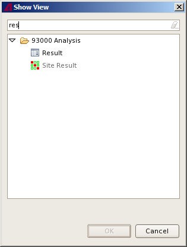

Opening a view and adding it to the perspective Procedure On the menu click Window > Show View > Other. The Show View window opens and shows all available views. In the filter field, type the name of the view. When you start typing, SmarTest lists all items whose names include the already typed string. Select the view in the list and click OK.  Note To remove a view from the perspective, close the view. Related informationWorking with a perspectiveArranging viewsCustomizing toolbars and menusSaving and resetting a perspectiveViews Functional changesIntroduced before SmarTest 6.3.2